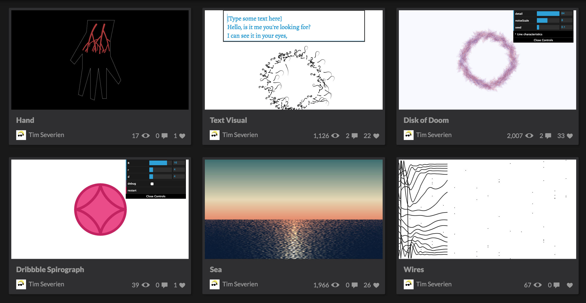

Conceiving Creative Pens
Tim Severien
- Front-end developer @ VI Company
- Author
I do CodePens
One a week or more.
Sorry for the gifs
Inspiration
1. Steal stuff
But be honest about it.

See the Pen EzvLK by Tim Severien (@timseverien) on CodePen.
http://imgur.com/0het78qSee the Pen Mica by Tim Severien (@timseverien) on CodePen.
https://twitter.com/Mathew_Lucas/status/7712370052167475202. Science
Physics
Keep it easy: Newton’s law of universal gravitation is accurate enough. General relativity is hard.
See the Pen Fireworks! by Tim Severien (@timseverien) on CodePen.
Computer Science
Fractals
See the Pen Fractals by Tim Severien (@timseverien) on CodePen.
Strange attractors
See the Pen Rössler Attractor by Tim Severien (@timseverien) on CodePen.
AI (sort of)
See the Pen Cellular Automaton 2 by Tim Severien (@timseverien) on CodePen.
Biology
Evolution
See the Pen The Evolution of Bacteria by Tim Severien (@timseverien) on CodePen.
Evolution
See the Pen The Evolution of Bacteria by Tim Severien (@timseverien) on CodePen.
See the Pen Evolution Through Sexual Reproduction by Tim Severien (@timseverien) on CodePen.
3. Doodles
a.k.a. tweak until it looks prettySee the Pen Chain by Tim Severien (@timseverien) on CodePen.
See the Pen Disk of Doom by Tim Severien (@timseverien) on CodePen.